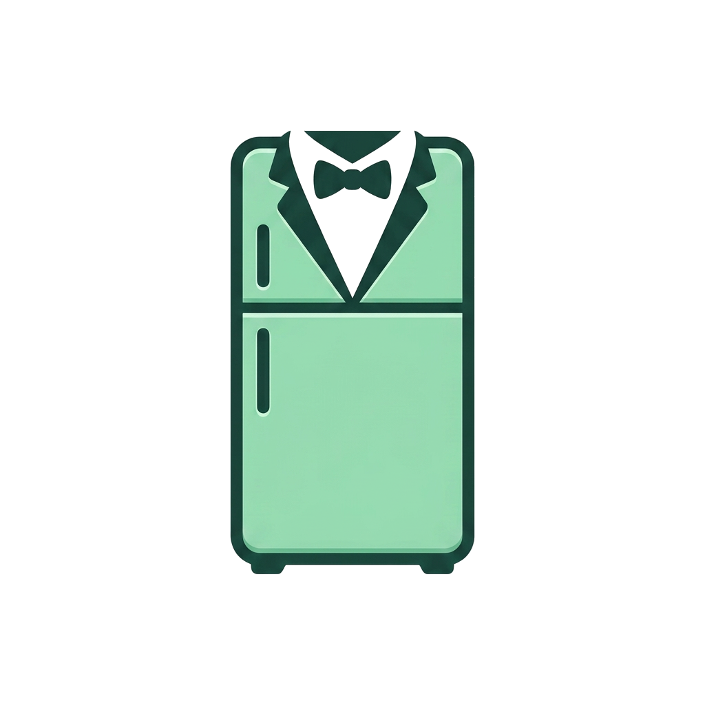

이제 냉장고는 '정리하는' 것이 아니라 '활용하는' 것입니다

냉장고 사진 한 장으로 재료를 자동 분석해 목록을 만들어 드립니다

보유 재료 기반으로 지금 바로 만들 수 있는 레시피를 매칭합니다

레시피 관련 궁금한 점을 AI에게 바로 물어보고 맞춤 답변을 받아보세요

레시피에 맞는 신뢰도 높은 요리 영상을 바로 연결해 드립니다

레시피에 부족한 재료를 즉시 구매할 수 있는 쇼핑 링크를 제공합니다
2026 KMUCS EXPO 발표 포스터

냉집사가 제공하는 6가지 스마트 기능
카메라 촬영 또는 사진 업로드 시 AI가 식재료를 자동 추출합니다. 수동 편집(추가/수정/삭제)도 지원합니다.
인식된 재료 기반으로 즉시 조리 가능한 최적 레시피를 매칭하고, 유튜브 링크로 요리 영상을 함께 제공합니다.
레시피나 요리 방법이 궁금할 때 AI에게 바로 질문하고 맞춤 답변을 받을 수 있습니다.
선택한 레시피에 필요한 부족 재료를 파악해 즉시 구매 링크를 제공합니다. 요리 계획부터 장보기까지 한 번에 해결합니다.
냉장고에 등록된 식재료 중 유통기한이 얼마 남지 않은 재료를 감지해 소비 전에 미리 알림을 보내드립니다.
알레르기 유발 식품 제외, 비건 등 식이 제한, 선호 요리 종류를 설정하여 나만의 맞춤형 레시피를 받을 수 있습니다.
냉집사 사용 6단계
냉장고 사진을 찍거나 갤러리에서 업로드
Google Gemini API가 이미지를 분석해 재료 자동 추출
인식된 재료 목록을 확인하고 필요 시 수정
보유 재료로 만들 수 있는 레시피 목록 확인
유튜브 요리 영상 시청 및 부족 재료 바로 구매
마음에 드는 레시피를 저장하여 나중에 다시 확인
굿파트너 팀 — 국민대학교 소프트웨어융합대학
Back-End
레시피 매칭 엔진, MySQL 데이터베이스 설계, FCM 푸시 알림 서버 구축
Front-End / AI
Flutter 기반 크로스 플랫폼 앱 UI/UX 구현 및 Google Gemini API 연동